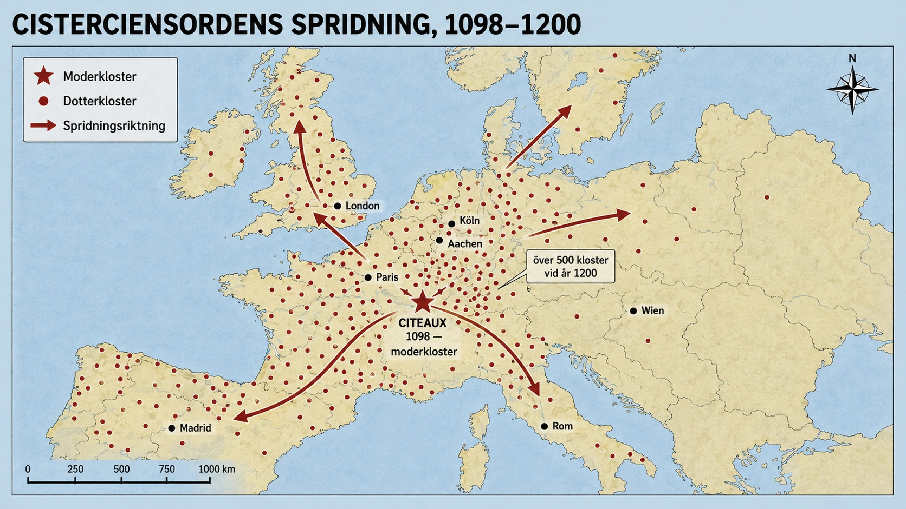

När en klosterorden blev jordbruksinnovatör
I huvudtexten har du läst om hur klostren spelade en avgörande roll i att sprida nya jordbruksmetoder. Men "klostren" är ett brett begrepp. Det fanns hundratals klosterordnar i medeltidens Europa, var och en med sin egen karaktär, sina egna regler och sin egen historia. Vissa var inåtvända, kontemplativa, fokuserade på bön. Andra var aktiva i världen — bedrev sjukvård, undervisning eller handel.
En av de viktigaste för jordbrukets utveckling var cistercienserna. Den här klosterorden har lämnat ett så djupt avtryck på Europas landskap att man kan se det än idag. Det är värt att förstå varför.
Hur det började — protesten i Citeaux
År 1098 grundade en grupp munkar ett nytt kloster i Citeaux i Burgund, södra Frankrike. Det latinska namnet — Cistercium — gav rörelsen dess namn: cistercienserna.
Grundarna var missnöjda med den gamla benediktinerorden, som de ansåg hade blivit för rik, för bekväm, för långt från Sankt Benedikts ursprungliga regel. De ville återgå till en enklare, hårdare, mer disciplinerad form av munkliv.
Deras ideal var arbete och bön — ora et labora, som Benedikts regel föreskrev. Inte fina gudstjänster med körsång och vackra mässhakar. Inte mottagning av rika gåvor och politiskt inflytande. Inte komfort. Istället: egen hand i jorden, enkel mat, tystnad, hård fysisk arbetsdag.
Det här var en radikal vision i 1100-talets Europa. Och den slog an. Inom hundra år hade cistercienserna grundat över 500 kloster över hela Europa — från Skottland till Polen, från Norge till södra Spanien. Det blev en av medeltidens mest spridda klosterordnar.

"Obrukad mark"-strategin
Men det är inte cisterciensernas religiösa ideal som vi minns dem för idag. Det är deras jordbruk.
Och här finns en intressant koppling mellan ideal och praktik. För att leva enkelt och avskilt från världen, valde cisterciensiska kloster ofta att grunda sig på obrukad, "värdelös" mark — i skogar, träsk, fjälldalar, områden som ingen annan ville ha eller kunde få något av.
Det var en del av deras spiritualitet: att gå bort från städer och rikedomar, att leva i ödemarken som de gamla ökenfäderna i Egypten. Men det var också ett brilliant ekonomiskt drag. Eftersom marken var värdelös var den nästan gratis. Adelsmän var glada över att donera obrukad skog eller träsk till en klosterorden — det gav dem religiöst kapital (gåvor till kyrkan ansågs hjälpa själen efter döden) utan att kosta något.
Men sedan kom själva uppfinningen. Cistercienserna förvandlade den värdelösa marken till bördig jord.
Systematisk uppodling
Hur gjorde de det? Med arbete, disciplin och teknik — i kombinationer som var ovanliga för sin tid.
Skog fälldes systematiskt. Cistercienserna högg ner skog, brände stubbar, plöjde upp den nya jorden, sådde säd. Det är hårt arbete för enskilda bönder, men för en klosterorden med dussintals munkar och hundratals lekbröder (mer om dem nedan) var det genomförbart i stor skala.
Träsk torrlades. Munkarna grävde dräneringsdiken, ledde bort vattnet, väntade tills marken torkade och blev odlingsbar. Det här är en teknik som romarna hade behärskat — men som glömts bort av många under tidig medeltid. Cistercienserna återupplivade den.
Floder reglerades. Med kanaler, dammar och uppdämningar kunde munkarna kontrollera vattnet — leda bort det när det var för mycket, samla det för att driva kvarnar, fördela det till bevattning.
Vattenkvarnar byggdes. Cistercienserna var fanatiska om vattenkvarnar — för säd, för olja, för smide. Det är dokumenterat att vissa cisterciensiska kloster hade lika många vattenkvarnar som det fanns i hela städer av deras storlek. De var, om man vill, sin tids energimaximerare — alltid på jakt efter sätt att utvinna nyttig kraft från flodernas och bäckarnas vatten.
Lekbröderna — den dolda nyckeln
För att kunna utföra all denna jordbruksverksamhet hade cistercienserna en organisatorisk innovation: lekbröderna.
Det fanns två sorters bröder i ett cisterciensiskt kloster. Korbröder — vanliga munkar — som ägnade sig åt bön, läsning och kontemplation. De hade fasta gudstjänster åtta gånger om dagen, läste latin, sjöng psalmer. De var de "riktiga" munkarna.
Men de hade också lekbröder (på latin conversi). Det var män som ville leva i klostret men inte var lärda — bondsönder, hantverkare, ofta från fattiga familjer. De gjorde de allra flesta praktiska arbetena: plöjde, sådde, skördade, byggde, smedade. De hade enklare regler, mindre tid i kyrkan, mer tid på fältet.
Det här systemet betydde att ett cisterciensiskt kloster kunde ha 50 korbröder och 200 lekbröder — alltså en stor arbetsstyrka, organiserad efter en strikt regel, med systematisk arbetsledning och utan löner att betala. Det var, om man vill, medeltidens motsvarighet till ett företag — fast med religiös motivation istället för vinstmotiv.
Vad cistercienserna spred
Med sin organisation, sin storskaliga uppodling och sina hundra kloster över hela Europa, blev cistercienserna en av tidens viktigaste kunskapsspridare.
De spred treskiftet systematiskt. De byggde och förbättrade hjulplogar. De experimenterade med nya grödor — de var bland de första att importera ris till delar av Spanien och introducera vinodling i nya områden. De avlade boskap och förbättrade fårraser (cistercienserna i England blev faktiskt så stora ullproducenter att de dominerade engelsk ullexport under en period).
Men kanske viktigast: de drev modellanläggningar. När bönder runt ett cisterciensiskt kloster såg hur effektivt klostret arbetade — hur stora skördar de fick, hur stora ladorna var, hur tjocka boskapen var — så ville de göra likadant. När bönder anställdes som dagsverkare på klostermarker lärde de sig metoderna praktiskt. När munkar och lekbröder flyttade mellan klostret tog de med sig kunskap över hundratals mil.
Det är inte överdrivet att säga att cistercienserna var en av medeltidens viktigaste tekniska innovationsmotorer. De var inte fritänkare, inte forskare i modern mening. Men de var organiserade, disciplinerade, läs- och skrivkunniga, med stora resurser, ett över-europeiskt nätverk — och en uttalad teologisk skyldighet att förbättra världen genom arbete. Det är en kraftfull kombination.
Också baksidan
Men cisterciensernas historia är inte oproblematisk. När man läser denna djupdykning kan det låta som att cistercienserna var enkla munkar i fattigdom som av kärlek till Gud förvandlade Europa till sin förmån. Sanningen är mer komplicerad.
För det första: cisterciensernas "obrukade mark"-strategi var inte alltid så obrukad som det lät. Vissa områden som de fick som gåvor hade tidigare brukats av lokala bönder. När munkarna tog över kunde dessa bönder förlora sina traditionella rättigheter — att hämta ved, beta djur, fiska, samla bär. Det var inte alltid en odelad framgång för lokalbefolkningen.
För det andra: när cistercienserna blev framgångsrika kom också rikedomar. Vid 1200-talet var många cisterciensiska kloster oerhört rika. De hade stora godsdomar, stora boskapsbesättningar, kommerciella nätverk. De var inte längre de fattiga, enkla munkarna från grundningstiden. De hade blivit precis det de grundades för att fly från.
För det tredje: lekbröderna var arbetare under hårda förhållanden — utan löner, utan rättigheter, utan möjlighet att lämna utan kyrkans tillstånd. Det är en form av arbetsorganisation som vi idag skulle se kritiskt på. För medeltidens fattiga män var det visserligen ofta en bättre situation än alternativen — en garanterad försörjning, en plats i samhället, ett mått av värdighet. Men det var inte fri arbetskraft i modern mening.
Cisterciensernas avtryck
Trots dessa komplikationer är cisterciensernas avtryck på Europa enormt och bestående. Många av de mest bördiga jordbruksområden i dagens Europa — i Frankrike, Tyskland, England, Polen, Spanien — odlades upp för första gången av cisterciensiska munkar för 800 år sedan. Många av deras dräneringssystem är fortfarande i bruk. Många kanaler och dammar som de byggde fungerar än idag.
Och fysiskt — många av Europas vackraste medeltida byggnader är cisterciensiska kloster. Fontenay i Frankrike, Maulbronn i Tyskland, Alcobaça i Portugal, Rievaulx och Fountains Abbey i England — alla cisterciensiska, alla idag världsarv.
Om du någon gång åker genom Europa och ser ett gammalt kloster som ligger ensamt i en dalgång, omgivet av åkrar och med en bäck eller flod som rinner förbi — finns det stor chans att det är cisterciensiskt. Och om du tänker på det, så är hela landskapet runt — åkrarna, dräneringen, byarna, vägarna — i grunden formad av samma munkar.
Vad cistercienserna säger om medeltiden
Cisterciensernas historia är värd att berätta inte bara som en kuriositet, utan för att den säger något viktigt om medeltiden i stort.
Medeltidens "innovationsmotorer" var ofta religiösa institutioner. Det är paradoxalt för oss som vant oss vid att se religion och vetenskap som motpoler. Men i medeltidens Europa var den läs- och skrivkunniga klassen nästan helt kyrklig. De som hade tid, resurser och bildning att experimentera med jordbruk, byggnadskonst eller medicin var ofta munkar. Klostren var medeltidens forskningsinstitut — fast med en ändamål som var lika andlig som praktisk.
Cistercienserna är det renaste exemplet på detta. De är inte de enda — benediktinerna, dominikanerna, franciskanerna, jesuiterna senare — alla bidrog. Men cistercienserna är den klosterorden som tydligast knöt ihop spiritualitet och jordbruksinnovation, och som genom det förändrade kontinenten.
Om du nästa gång hör ordet "munk" och bara tänker på en stilla bedjande man i mörk kåpa — tänk också på de tusentals lekbröder som hela året plöjde, sådde, skördade och byggde, och hur deras arbete spred sig genom 500 systerkloster över Europa, och hur det landskap vi idag tar för givet i grunden formades av deras religiösa visioner.
Religiösa ideal → systematiskt arbete → europeiskt landskap.